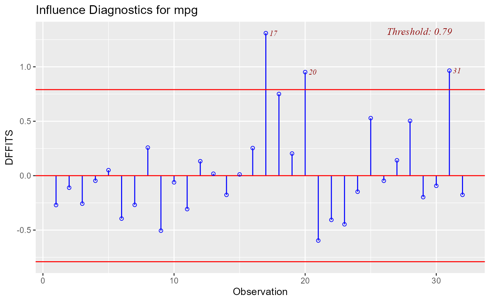

Plot for detecting influential observations using DFFITs.
ols_plot_dffits(model)
| model | An object of class |
|---|
ols_plot_dffits returns a list containing the
following components:
a tibble with observation number and DFFITs that exceed threshold
threshold for classifying an observation as an outlier
DFFIT - difference in fits, is used to identify influential data points. It quantifies the number of standard deviations that the fitted value changes when the ith data point is omitted.
Steps to compute DFFITs:
Delete observations one at a time.
Refit the regression model on remaining \(n - 1\) observations
examine how much all of the fitted values change when the ith observation is deleted.
An observation is deemed influential if the absolute value of its DFFITS value is greater than: $$2\sqrt(p + 1) / (n - p -1)$$
where n is the number of observations and p is the number of predictors including intercept.
ols_dffits_plot() has been deprecated. Instead use ols_plot_dffits().
Belsley, David A.; Kuh, Edwin; Welsh, Roy E. (1980). Regression Diagnostics: Identifying Influential Data and Sources of Collinearity.
Wiley Series in Probability and Mathematical Statistics. New York: John Wiley & Sons. ISBN 0-471-05856-4.
[ols_plot_dfbetas()]
model <- lm(mpg ~ disp + hp + wt + qsec, data = mtcars) ols_plot_dffits(model)